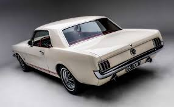

The 1957 Chevrolet is a car which was introduced by Chevrolet in September 1956 for the 1957
model year. It was available in three series models: the upscale Bel Air, the mid-range
Two-Ten, and the One-Fifty. A two-door station wagon, the Nomad was produced as a Bel Air
model. An upscale trim option called the "Delray" was available for two-ten 2-door sedans.
It is a popular and sought after classic car. These vehicles are often restored to their
original condition and sometimes modified. The car's image has been frequently used in toys,
graphics, music, movies and television.The '57 Chevy, as it is often known, is an auto
icon.
The Hudson Hornet was a full-sized automobile which was produced by the Hudson Motor Car Company
of Detroit, Michigan, between 1951 and 1954 and then by American Motors Corporation (AMC) in Kenosha, Wisconsin,
and marketed under the Hudson brand between 1955 and 1957. The first-generation Hudson Hornets featured a
functional "step-down" design with dropped floorpan and a chassis with a lower center of gravity than contemporary
vehicles that helped the car handle well – a bonus for racing. The Hornet's lower and sleeker look was
accentuated by streamlined styling, sometimes called "ponton" styling. The car's "unique, low slung appearance
and silky handling earned Hudson an image that – for many buyers – eclipsed luxury marques like Cadillac."
The 1950 Ford model range included a station wagon which, at the time of its introduction, was marketed as part of
the top-line Custom Deluxe trim. In the following spring, Ford began promoting the wagon as the Country Squire, although that
name did not appear anywhere on the car. Along with the name change came the addition of a fold-down middle-row seat.
Following the rest of the Ford lineup, the Country Squire was available with a standard 226 cid inline six-cylinder engine as
or an optional V-8. The first generation Country Squire was the beginning of the end of the full "woodie". The whole body
was made of steel, unlike the Ford wagons up to 1948 that were all wood from the cowl back except for the rear fenders. Real
wood attached to the steel body on the doors, sides and tailgate of the 1949 thru 1951 models, and Ford did not offer a
woodless version. The interiors were all paneled in wood also. GM would later introduce a two-door station wagon in 1955
called the Chevrolet Nomad and Pontiac Safari.

The first-generation Ford Mustang was manufactured by Ford from March 1964 until 1973. The introduction of the Mustang created
a new class of automobile known as the pony car. The Mustang’s styling, with its long hood and short deck, proved wildly popular
and inspired a host of competition.It was initially introduced as a hardtop and convertible with the fastback version put on sale in August 1964.
At the time of its introduction, the Mustang, sharing its underpinnings with the Falcon, was slotted into a compact car segment.
The 1949 Ford was an American automobile produced by Ford. It was the first all-new automobile design introduced by the Big
Three after World War II, civilian production having been suspended during the war, and the 1946-1948 models from Ford, GM, and Chrysler
being updates of their pre-war models. Popularly called the "Shoebox Ford" for its slab-sided, "ponton" design, the 1949 Ford is credited
both with saving Ford and ushering in modern streamlined car design with changes such as integrated fenders and more . The design would
continue through the 1951 model year.